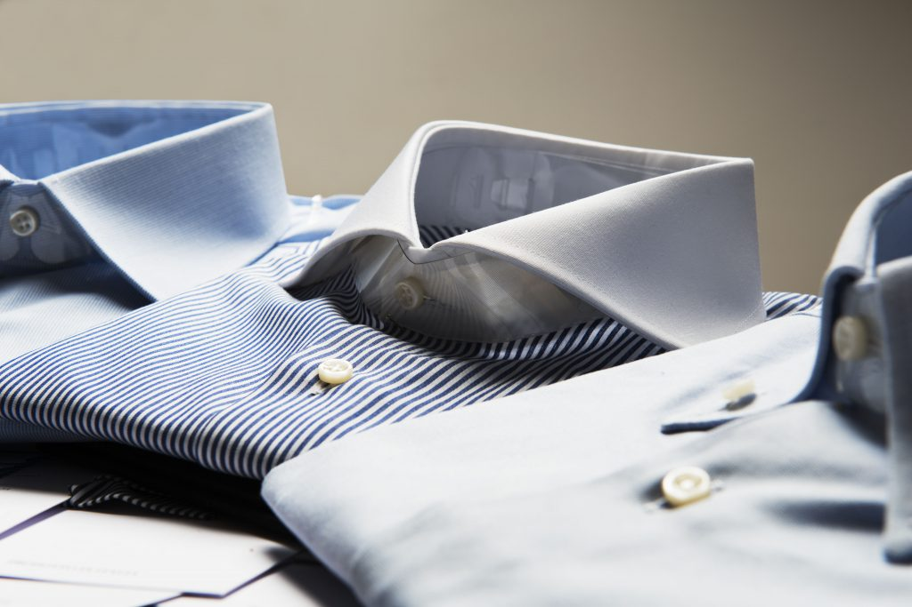

Products and crafts
Our products: suits, gilets, jackets, trousers, coats, trenches, shirts, ties, whether for your work or for your free time or for your special occasions as weddings or night galas.
Jackets Pants Suits
We produce made-to-measure and bespoke suits. Made-to-measure Suit. For the made-to-measure suit the tailor takes the customer’s size but the paper pattern is made according to a basic size (called misurometro in Italian) from which the suit is changed (length, waist, shoulders, sleeve, wrist, bicep, cuff) in order to customise it according to your body and stance. For the made-to-measure suits the fitting session is not necessary. Time of production: 4 weeks.
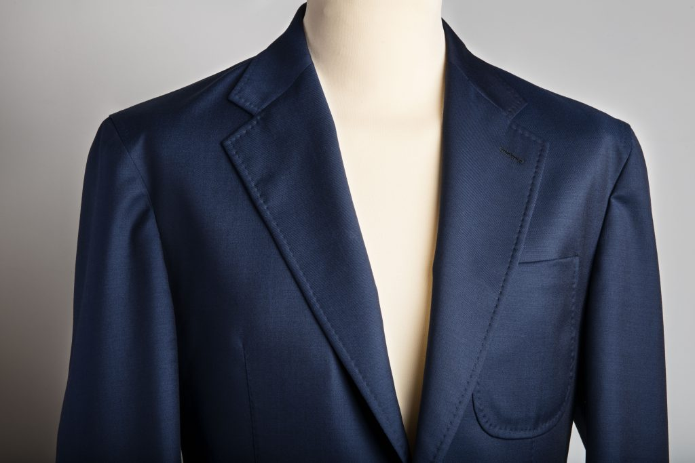 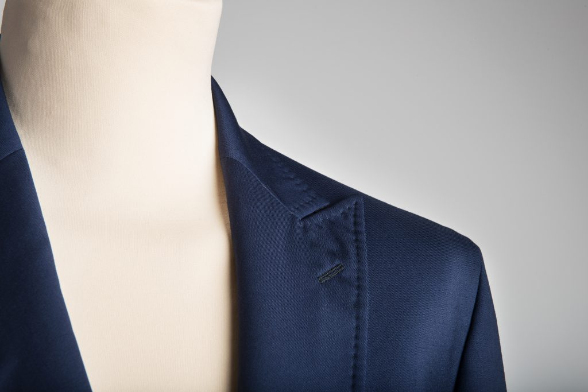 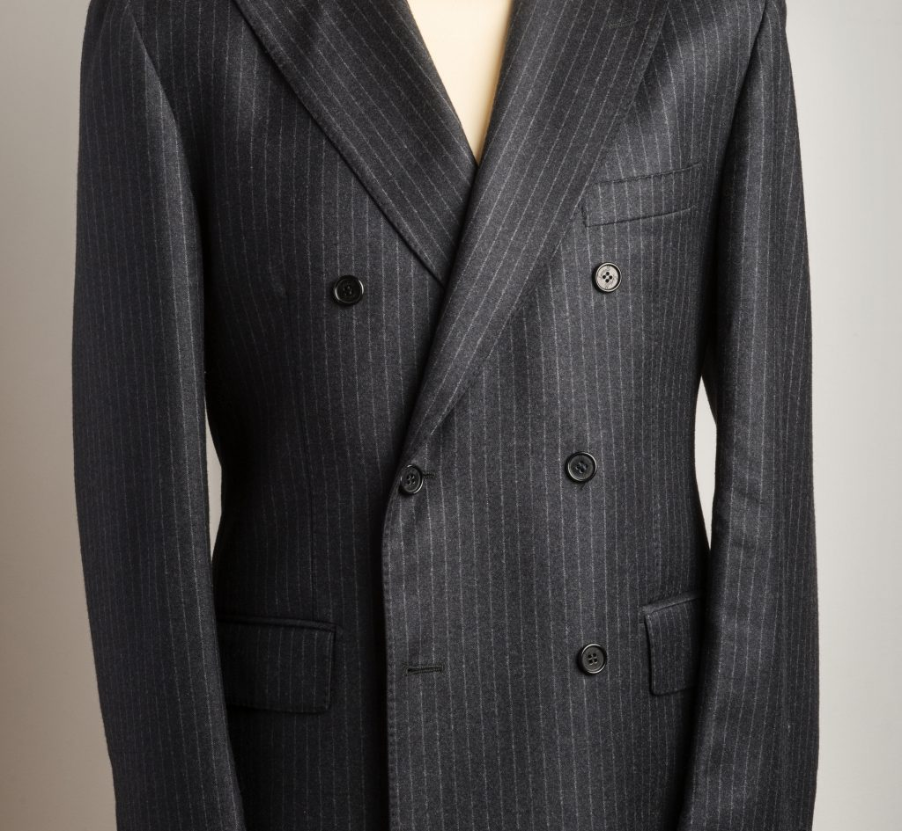 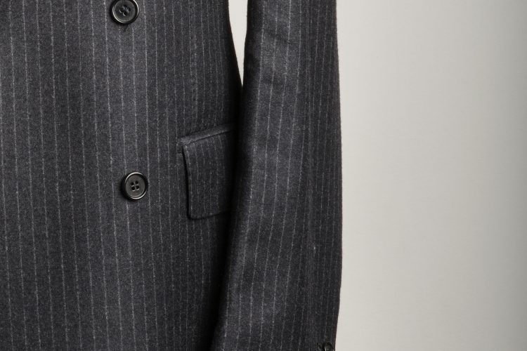Bespoke Suit. For the bespoke suit, our tailor cuts the fabric from the scratch on the basis of your size, measuring in details every part of your body. From these measurements we create a unique suit. Every suit is tailored with more than 3000 stitches and hand sewn linings and buttonholes. This suit requires a deep knowledge of the different techniques. For this type of manufacturing, 2 fitting sessions are required. Time of production: 8 weeks.
Shirts
Our customised shirts are created with the same technique as the bespoke suit. We make shirts for your work, your free time and for special occasions. We can utilise both hand or sewing machine stitches. All our shirts distinguish themselves for their accessories and fabrics: it is possible to choose the making of the collars and cuffs, hand sewn or glued. Shirts are made with Italian fabrics selected by expert artisans. Time of production: 4 weeks.
 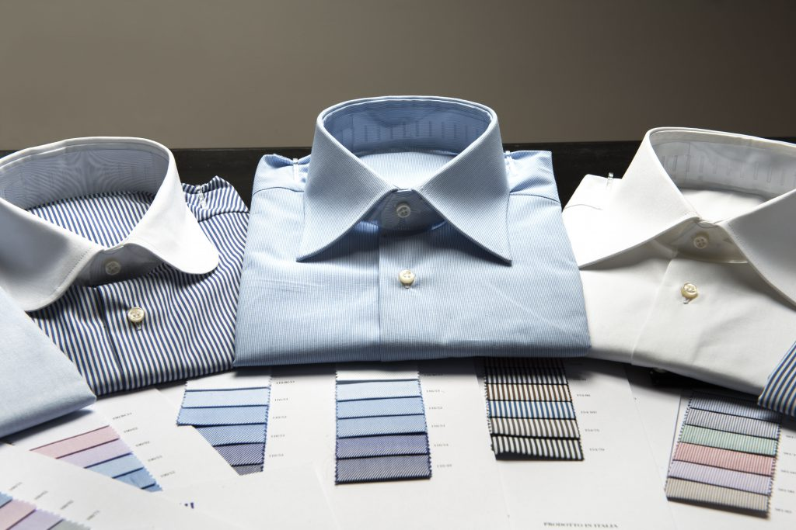
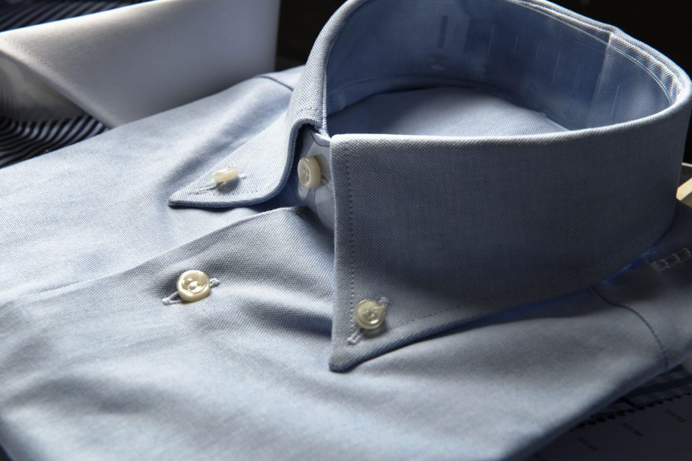
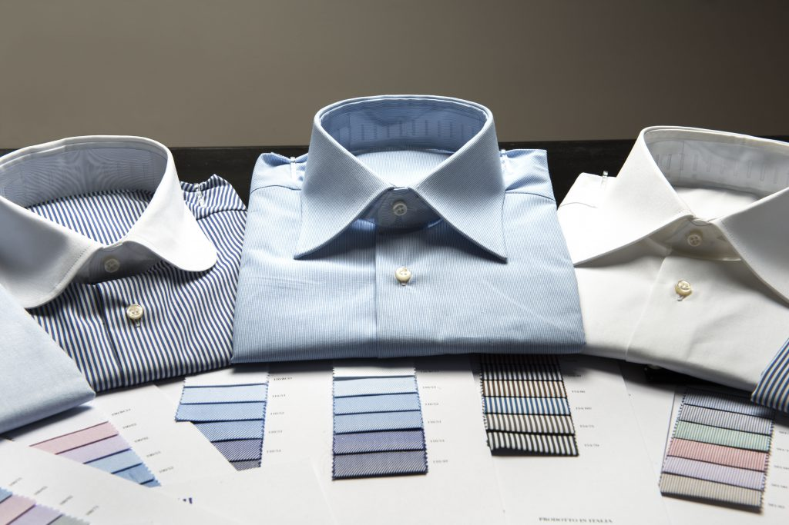
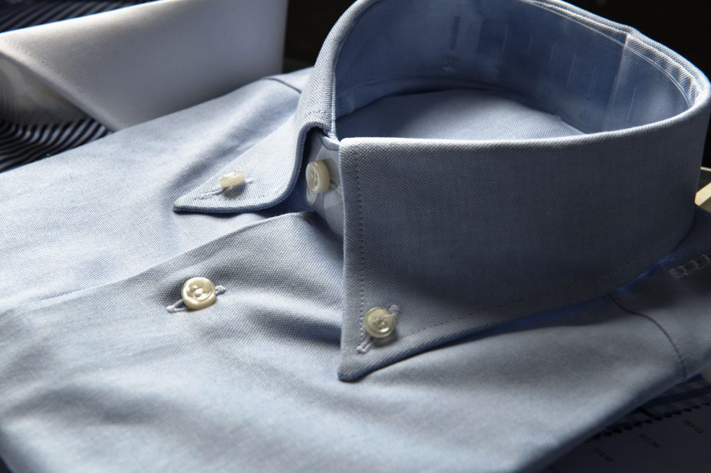
Accessories
We create ties, pocket squares, glasses cases, bow-tie, many kind of different foulards, customised tailored or already made, for your work, your free time and for special occasions like ceremonies or night gala, always tailored with the classic techniques of the Italian handmade. Also the accessories are produced crafted and made with the finest Italian fabrics. Our ties can be lined or unlined, and 5 or 7 fold ties.
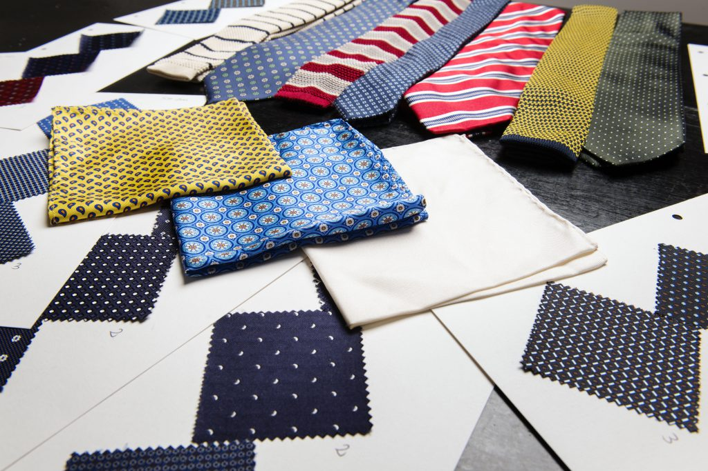 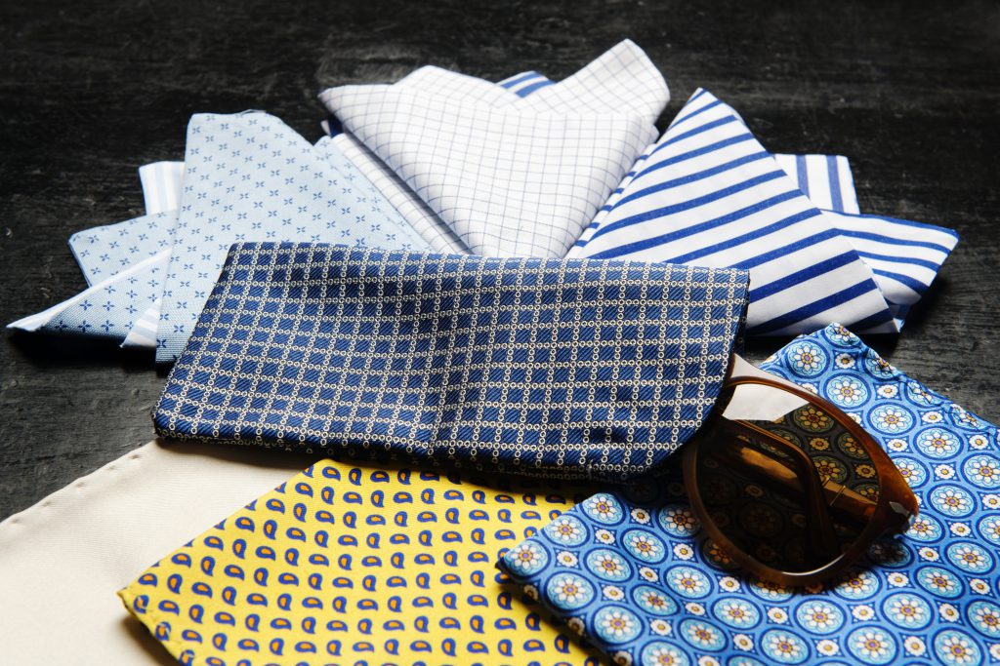 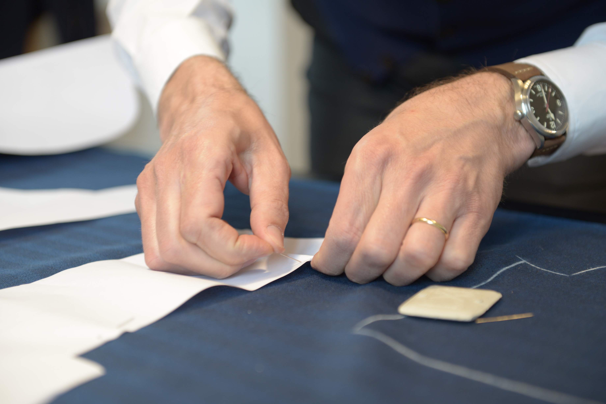 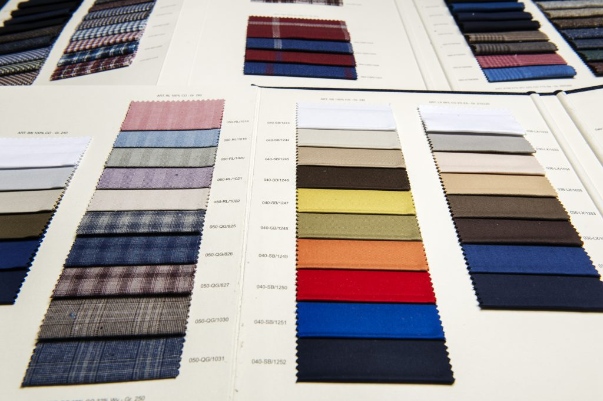